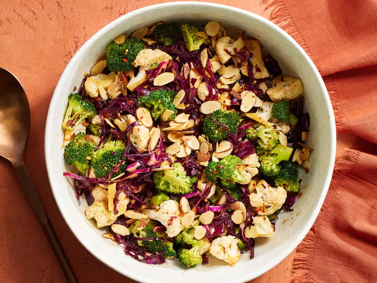

Cauliflower and Broccoli Salad with Honey-Soy Dressing

Description
This vibrant veggie dish brings together crisp red cabbage, crunchy cauliflower and broccoli, and a tangy orange-tamari dressing. The flavors deepen as the salad chills, making it easy to make ahead for holiday get-togethers.
Ingredients
- 3 tablespoons fresh orange juice
- 2 tablespoons less-sodium tamari or soy sauce
- 2 tablespoons canola oil
- 1 tablespoon honey
- 1 teaspoon orange zest
- 1 teaspoon minced garlic
- 1/2 teaspoon toasted sesame oil
- 1/4 teaspoon salt
- 1/4 teaspoon crushed red pepper
- 3 cups thinly sliced red cabbage
- 4 cups 1/2-inch cauliflower and/or broccoli florets
- 1/2 cup toasted sliced almonds
Steps
- In a large bowl, whisk together juice, tamari, canola oil, honey, zest, garlic, sesame oil, salt, and crushed red pepper. Add red cabbage and cauliflower and/or broccoli; toss to coat.
- Let stand 30 minutes, stirring occasionally. Just before serving, top with almonds.